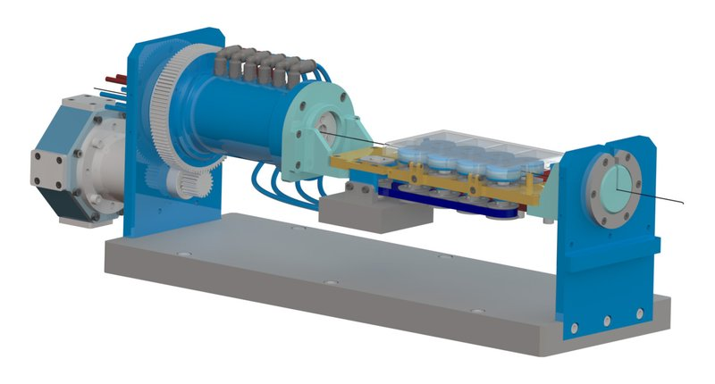

Academic bedside robots · sjtumr_huang2022
SJTU MR wire drive
SJTU pneumatic MR-conditional guidewire delivery mechanism with decoupled actuation

1 / 4


- Family
- Academic bedside robots (academic)
- Devices
- guidewire
- Degrees of freedom
- 2 (translation + rotation, decoupled)
- Push
- Friction rollers
- Twist
- Rotating drive unit
- Tested up to
- Phantom
- Sim-to-real
- None found — No simulation-trained controller found for this robot.
Testing
- Highest level
- Phantom
- What was tested
- real-time MRI-guided guidewire delivery in an aorta phantom (TRANDOMED SJK001F) (huang2022_pneumatic Sec. IV-C)
- Key numbers
- resolution 0.238 mm/step and 0.4 deg/step; mean translational error 0.37 mm; rotary motor torque 15.75 N·m/MPa as printed; pneumatic clamp 9 mm bore, 63 N/MPa; SNR loss < 2% (huang2022_pneumatic Abstract, Sec. II-III)
Mechanism
- Push (translation)
- friction-roller
- Twist (rotation)
- other: pneumatic slip ring rotates the whole wheel unit, driven by a rotary pneumatic step motor through 1:5 spur gears
- Device range
- N.R.
- Target anatomy
- coronary (PCI) under MRI; aorta phantom
Sensing and interface
- Force sensing
- none
- Leader and haptics
- handheld control (huang2022_pneumatic Fig. 4); haptics N.R.
- Imaging
- MR-conditional: pneumatic step motors, 3D-printed parts; tested in a Siemens MAGNETOM Aera 1.5 T
- Sterility
- N.R.
Size
- Footprint (mm)
- N.R.
- Mass (kg)
- N.R.
Simulation
- Simulation model
- none found
- Sim-trained controller
- none found
Versions
- Lineage
- single version (huang2022_pneumatic)
Sources
- A Pneumatic MR-conditional Guidewire Delivery Mechanism with Decoupled Actuations for Endovascular Intervention · 2022 IEEE/RSJ International Conference on Intelligent Robots and Systems (IROS), 2022 · doi:10.1109/iros47612.2022.9981596 [huang2022_pneumatic]
Notes
- Notes
- Third SJTU robot in the catalogue (A2 has sjtu_xie_shen2019 and sjtu_coronary_meng2025); this one is MR-conditional. Photo in the MR room (Fig. 4) is 573 px.
This record
- Read level
- full
- Picture
- huang2022_pneumatic Fig. 1(a) (native raster p. 2) ↗ — licence: publisher copyright; grade B
- Picture changes
- native extract; 50 px white margin added; not upscaled
- Found by
- gap: Gap searches for robots the other searches missed.
- Data
- JSON · YAML:
records/robots/sjtumr_huang2022.yaml - Correction
- Suggest a correction [repository not created yet]